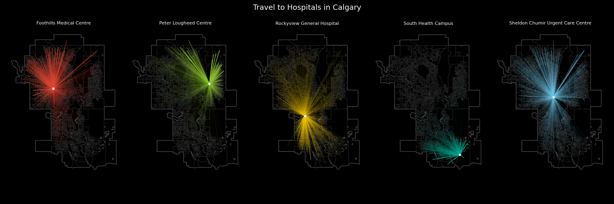
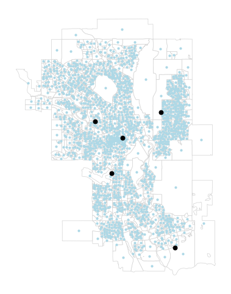
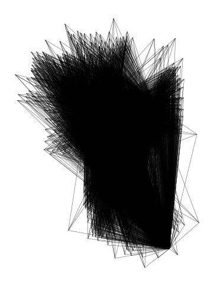
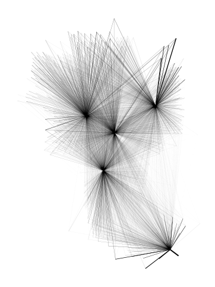
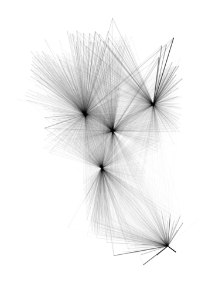
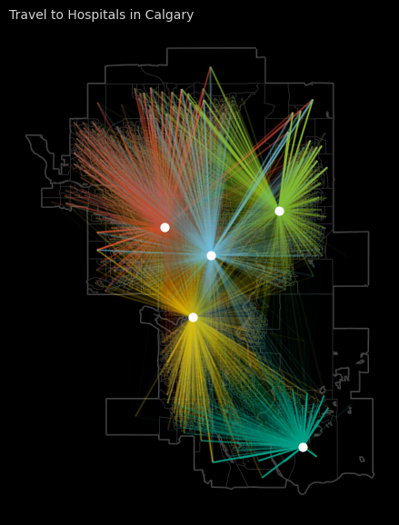
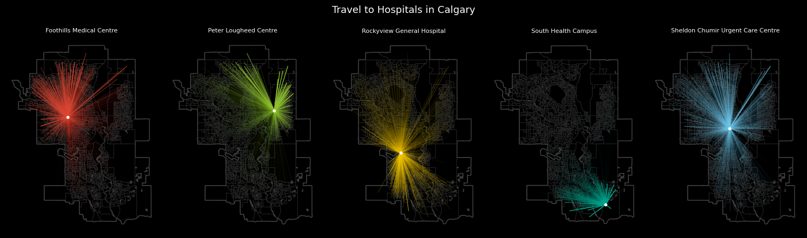

import warnings
warnings.filterwarnings('ignore')
import pandas as pd
import geopandas as gpd
from shapely.geometry import LineString
import matplotlib.pyplot as pltFlow maps
Flow maps are one such way that we can visualize connections and travel between different sets of locations.
In the example below, we are mapping travel to hospitals in Calgary. Each line represents a single trip from someone’s home neighbourhood to a hospital, visualized with a very faint transparency, but when overlaid on top of each other, they highlight overall patterns of visits to these five hospitals.
Charts like these are sometimes called hub-and-spoke maps or spider diagrams. In the tutorial that follows, we will learn about the data structures behind these maps and how to visualize them, specifically replicating this example.

Prerequisites
Prior knowledge of pandas, geopandas, QGIS, and Inkscape (or similar graphic design software) would be helpful for the following tutorial. Here are the links to download this notebook and data.
If you are running the notebook and/or script locally (generally recommended), you will need to use the following libraries. You’ll have to install them (e.g. via pip or conda) if you do not have them installed already.
Origin-destination matrices
Origin-Destination matrices encode many people travel from one set of locations (e.g. neighbourhoods) to another set of locations (e.g. hospitals). These are sometimes called flow or trip tables.
In urban geography applications, this data often represents people travelling in the city, to or from specific types of places. But it can also be used to represent the transport or travel of other phenomena e.g. products, money, wildlife, etc.
This type of data can be based on real observations e.g. from administrative data that includes visiting patients’ addresses or a survey that asks about daily travel. The data can also be simulated, i.e. estimated, based on a model that predicts trips between locations.
The example data that we are going to look at below is the latter, ersatz data of trips to hospitals in Calgary. Let’s load it and take a look. The data have 3 columns; the first is the unique ID of a Census Dissemination Area (DA), the second is the ID of a hospital, and the third column is the number of visits from each DA to each hospital.
od = pd.read_csv("data/od-flows.csv")
od.tail(5)| dauid | hospital_id | trips | |
|---|---|---|---|
| 8370 | 48062794 | 0 | 19.0 |
| 8371 | 48062794 | 1 | 41.0 |
| 8372 | 48062794 | 2 | 4.0 |
| 8373 | 48062794 | 3 | 0.0 |
| 8374 | 48062794 | 4 | 16.0 |
When working with data like this, it is sometimes the case that the data are available in a wide format, where the rows pertain to the origin (e.g. Dissemination Area) and the columns pertain to the destination (e.g. hospitals), instead of the long format shown above.
In pandas, it’s super easy to pivot from long to wide.
od_wide = od.pivot_table(index='dauid', columns='hospital_id', values='trips')
od_wide.tail(5)| hospital_id | 0 | 1 | 2 | 3 | 4 |
|---|---|---|---|---|---|
| dauid | |||||
| 48062790 | 39.0 | 49.0 | 7.0 | 0.0 | 31.0 |
| 48062791 | 37.0 | 3.0 | 11.0 | 0.0 | 15.0 |
| 48062792 | 25.0 | 2.0 | 9.0 | 0.0 | 11.0 |
| 48062793 | 0.0 | 0.0 | 0.0 | 0.0 | 0.0 |
| 48062794 | 19.0 | 41.0 | 4.0 | 0.0 | 16.0 |
And here’s how to melt from wide to long if you need to.
od_wide.reset_index().melt(
id_vars='dauid',
value_vars=[0,1,2,3,4],
var_name="hospital_id",
value_name="population"
).head(5)| dauid | hospital_id | population | |
|---|---|---|---|
| 0 | 48060056 | 0 | 20.0 |
| 1 | 48060057 | 0 | 16.0 |
| 2 | 48060058 | 0 | 20.0 |
| 3 | 48060059 | 0 | 14.0 |
| 4 | 48060060 | 0 | 24.0 |
We also have location data for the centroids of Dissemination Areas (DAs) and the hospitals. Let’s load these and quickly plot them to take a look:
da = gpd.read_file("data/da-2021-centroids.geojson")
da_poly = gpd.read_file("data/da-2021-polygons.geojson")
hp = gpd.read_file("data/hospital-locations.geojson")
fig, ax = plt.subplots(figsize=(6,6))
da_poly.plot(
ax = ax,
edgecolor = 'LightGray',
linewidth = 0.5,
color = "White"
)
da.plot(
ax = ax,
color = 'LightBlue',
markersize = 4
)
hp.plot(
ax = ax,
color = 'Black',
markersize = 22
).set_axis_off()
Generating flow lines
For a flow map, we want to connect the two sets of points, and then style the lines based on the weight connecting them, in this case, the number of trips between them.
For this, we are essentially creating a straight line geometry for every row in od. We can do this by first joining in the coordinates to the od flow matrix
da['dauid'] = da['name'].astype('int64')
odm = od.merge(
da,
how='left',
on = "dauid"
).merge(
hp,
how='left',
left_on='hospital_id',
right_on='id'
)Then we use some shapely magic, specifically the LineString function to combine two point geometries into a line geometry. The lambda function (a small single expression function) applies this to each row in the GeoDataFrame. (Check out this tutorial for using Lambda functions in pandas)
odm = gpd.GeoDataFrame(
{
'dauid': odm['dauid'],
'hospital_id': odm['hospital_id'],
'trips': odm['trips'],
'geometry': odm.apply(
lambda x: LineString([x['geometry_x'], x['geometry_y']]), axis=1
)
}
).set_crs(epsg="4326")
# saving to file
odm.to_file("data/od-flow-lines.geojson", driver="GeoJSON")Let’s plot the result!
fig, ax = plt.subplots(figsize=(6,6))
odm.plot(
ax = ax,
linewidth = 0.25,
color = 'Black'
).set_axis_off()
Visualizing flow lines
That’s a bit of a mess, but it looks like the lines are all there. There are a few simple ways to distinguish lines with more trips, and dim those with fewer. The first is to have the line width be a function of the number of trips
fig, ax = plt.subplots(figsize=(6,6))
odm.plot(
ax = ax,
linewidth = odm["trips"] / 1000,
color = 'Black'
).set_axis_off()
We can also plot based on the function of the opacity of the line (i.e. less transparency if the connection has more trips). In the plot function, alpha controls the opacity, and ranges from 0 to 1. To normalize the trips column, we divide by its max value.
fig, ax = plt.subplots(figsize=(6,6))
odm.plot(
ax = ax,
linewidth = 1,
alpha = odm['trips'] / odm['trips'].max(),
color = 'Black'
).set_axis_off()
Let’s try to better distinguish flows to each hospital, i.e. to better show what the catchment area is of visitors to each. We can do this with the help of a little colour! Below we combine categorical colouring with dynamic opacity styling used above.
# specifying the colour and opacity of each line
colour_mapping = {
0: "#DC4633",
1: "#8DBF2E",
2: "#F1C500",
3: "#00A189",
4: "#6FC7EA",
}
odm["colour"] = odm["hospital_id"].map(colour_mapping)
odm["opacity"] = odm["trips"] / 250
odm['opacity'] = odm['opacity'].clip(upper=1)
# plotting them all on a single plot!
fig, ax = plt.subplots(figsize=(7,7), facecolor='black')
da_poly.plot(
ax = ax,
edgecolor = '#484848',
linewidth = 2,
color = "Black"
)
da_poly.plot(
ax = ax,
edgecolor = '#2B2B2B',
linewidth = 0.5,
color = "Black"
)
for hospital in [0,1,2,3,4]:
odp = odm[odm["hospital_id"] == hospital]
odp.plot(
ax=ax,
linewidth=1,
alpha=odp["opacity"],
color=odp['colour'],
zorder = 1
)
for hospital in [0,1,2,3,4]:
odp = odm[odm["hospital_id"] == hospital]
odp.plot(
ax=ax,
linewidth=2,
alpha=odp["opacity"] / 3,
color=odp['colour'],
zorder = 2
)
hp.plot(
ax = ax,
color = 'White',
markersize = 40,
zorder = 3
)
ax.set_title(
'Travel to Hospitals in Calgary',
fontsize=10,
loc = "left"
).set_color('LightGray')
ax.set_axis_off()
fig.savefig('images/calgary-hospital-map-all-python-export.png')
The above map views nicely, but it can be a bit difficult to parse out travel to any specific hospital. One solution to this are small multiples, where we create 5 smaller plots, each focusing on a specific hospital.
fig, ax = plt.subplots(ncols=5, nrows=1, figsize=(15,5), facecolor='black')
for hospital in [0,1,2,3,4]:
# data layers
odp = odm[odm["hospital_id"] == hospital]
da_poly.plot(
ax = ax[hospital],
edgecolor = '#484848',
linewidth = 2,
color = "Black"
)
da_poly.plot(
ax = ax[hospital],
edgecolor = '#2B2B2B',
linewidth = 0.5,
color = "Black"
)
odp.plot(
ax=ax[hospital],
linewidth=1,
alpha=odp["opacity"],
color=odp['colour'],
zorder = 1
)
hp[hp["id"] == hospital].plot(
ax = ax[hospital],
color = 'White',
markersize = 10,
zorder = 3
).set_axis_off()
# titles
ax[hospital].set_title(
hp.loc[hospital, 'facility_name'],
fontsize=8,
loc='center'
).set_color('White')
# overall title and save to file
fig.suptitle(
'Travel to Hospitals in Calgary',
fontsize=13
).set_color('White')
fig.tight_layout(rect=[0, 0.03, 1, 0.95])
fig.subplots_adjust(top=0.9, bottom=0.1)
fig.savefig('images/calgary-hospital-map-multipes-python-export.png')